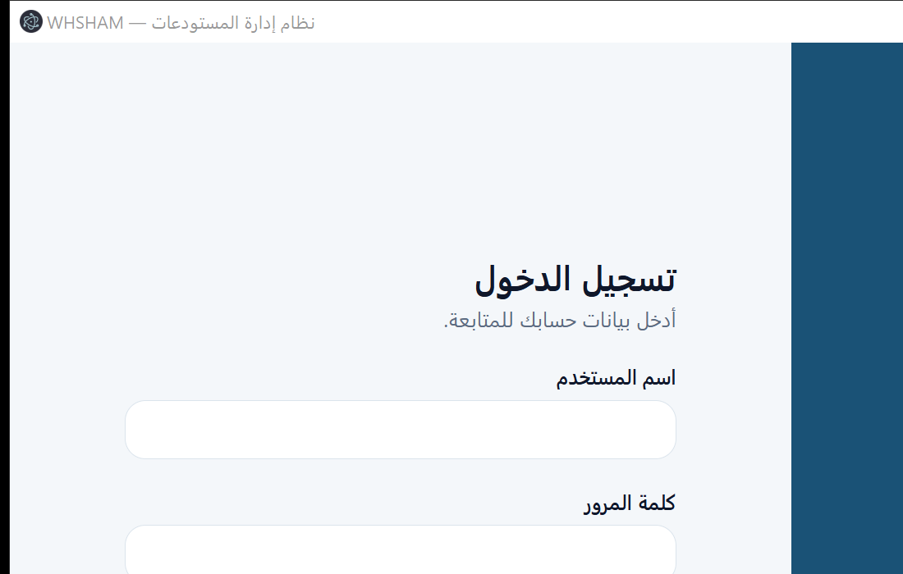

تطبيق سطح مكتب لإدارة مخزون المستودعات الصحية: كتالوج المواد، الأرصدة والدفعات، حركات الإدخال والإخراج والنقل، العهد الشخصية، التقارير، وسجل تدقيق غير قابل للتعديل — يعمل محليًا بالكامل دون إنترنت ودون خادم، وبقاعدة بيانات على الجهاز نفسه.
مصمَّم لبيئة عمل مقيَّدة الشبكة: كل شيء يعمل على جهاز واحد، والبيانات لا تخرج منه.
إدخال بدفعات مع رقم الدفعة وتاريخ الصلاحية، وإخراج يستهلك الأقرب انتهاءً أولًا تلقائيًا — داخل معاملة واحدة لا تقبل الأرصدة السالبة.
لا منطق أمني في الواجهة: الصلاحيات تُفحص في العملية الرئيسية قبل التنفيذ، وكل عملية حساسة تُقيَّد في سجل تدقيق مُسلسَل بالبصمات.
الرقم الوطني في العهد الشخصية يُخزَّن مشفَّرًا بـAES-256-GCM، ولا يُكشف إلا بصلاحية صريحة وتُسجَّل مع كل كشف.
ستة تقارير: أرصدة · حركات · تحت الحد الأدنى · قرب الانتهاء · عهد مفتوحة · سجل التدقيق — مع تصدير CSV متوافق مع Excel العربي.
مسح بالكاميرا (BarcodeDetector) مع دعم أجهزة قراءة الباركود عبر الإدخال اليدوي السريع.
نسخة بعد فحص سلامة القاعدة، ونسخة أمان تلقائية قبل أي استعادة — كل ذلك من داخل التطبيق.
واجهة عربية كاملة من اليمين إلى اليسار، بواجهة واضحة وبطاقات مؤشرات فورية.

لا يحتاج التطبيق إلى خادم أو خدمة سحابية. للمطوّر:
npm install --ignore-scripts npm run setup:electron # تركيب وقت تشغيل Electron محليًا npm run verify # أنواع + اختبارات + سيناريو كامل + بناء npm run build:portable # نسخة محمولة جاهزة للتشغيل دون تثبيت
| الفحص | النتيجة |
|---|---|
| فحص الأنواع (TypeScript strict) | 0 أخطاء |
| اختبارات الوحدة | 8/8 ناجحة |
| السيناريو الكامل على قاعدة حقيقية | ناجح — إدخال 65 وحدة · FIFO · نقل · عهدة مشفَّرة · تقارير · نسخة احتياطية · سلسلة تدقيق سليمة |
| البناء الإنتاجي + سير عمل CI | ناجح على كل دفع |
لا يوجد أي منطق أمني في الواجهة؛ كل قرار يُتخذ ويُفحص قبل التنفيذ.
contextIsolation · sandbox · تعطيل nodeIntegration · سياسة CSP · منع التنقّل وفتح النوافذ.
42 قناة بأسماء صريحة + تحقق zod لكل حِمل + خريطة صلاحية لكل قناة + عدم تسريب التفاصيل التقنية.
scrypt بملح لكل مستخدم · مقارنة زمنية ثابتة · قفل بعد 5 محاولات · إلزام تغيير كلمة المرور الأولى.
8 أدوار × 25 صلاحية من مصدر واحد · إنكار ضمني · حماية آخر مدير نظام · تسجيل كل محاولة مرفوضة.